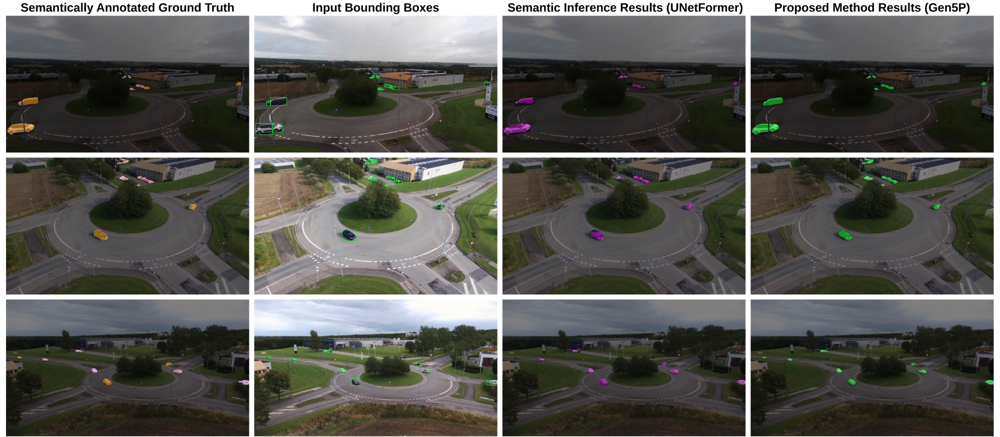
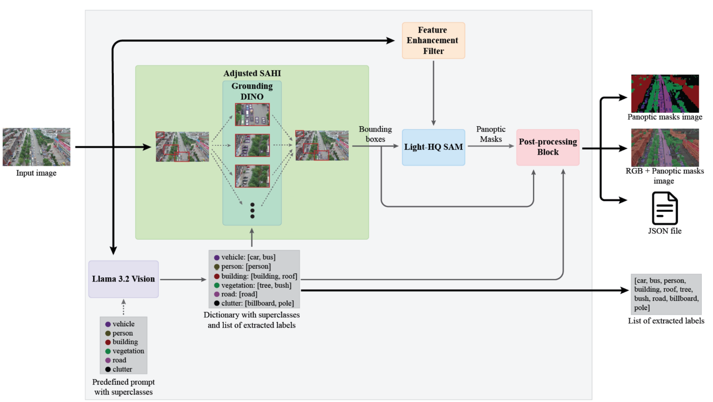
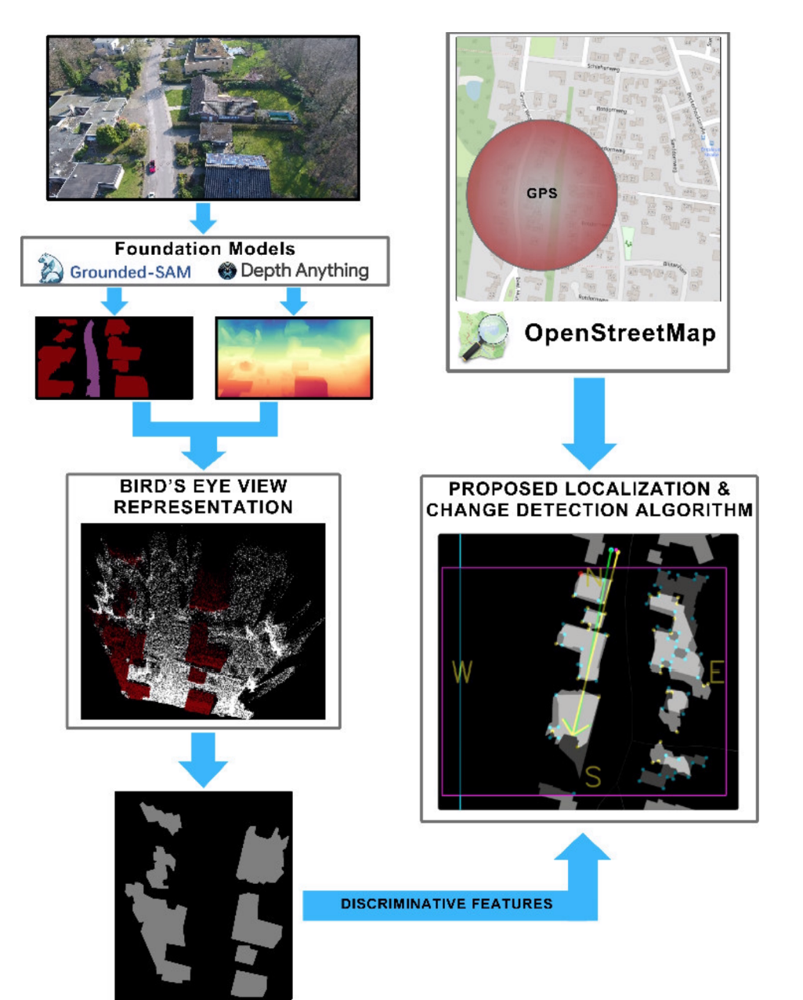
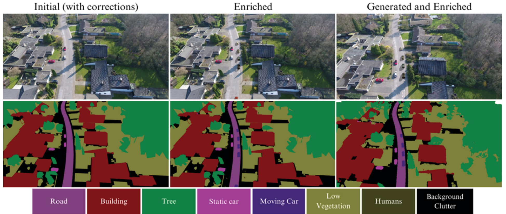
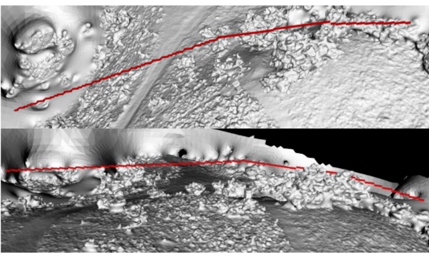

Vivian Chiciudean
🌐 WEBSITE | 🎓 SCHOLAR | 💻 GITHUB | ORCID | 💼 LINKEDIN
Ph.D. student at the Technical University of Cluj-Napoca, working on aerial perception.
I am a Ph.D. student and AI researcher at the Technical University of Cluj-Napoca. My research is on scene perception and understanding for UAVs, in particular high-quality aerial datasets and semantic segmentation.
News
| 07/2026: | UAVid++ was accepted to IEEE TGRS! Dataset, code, and project page are online. |
| 10/2025: | Two works I co-supervised were presented at IEEE ICCP 2025: semantic segmentation and open-world video panoptic segmentation with foundation models. |
| 10/2024: | I presented Localization and Change Detection at IEEE ICCP 2024. |
| 10/2024: | I started my Ph.D. in Environment Perception at TUCN. |
| 01/2024: | Our work on data augmentation for UAV perception appeared in IEEE TIV. |
| 10/2023: | I presented Static Mesh Enrichment at IEEE ICCP 2023. |
| 09/2022: | My first paper, Pathfinding in a 3D Grid, at IEEE ICCP 2022. |
Research





